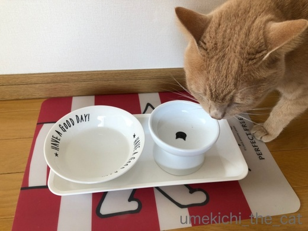
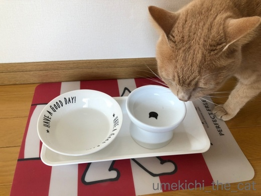

梅吉は甘党だった？ [梅吉]
二月三日の節分は近所の神社にお参り。節分の厄除けです。
形代には去年に続いてもちろん梅吉の名前も書きましたよ＾＾

息を吹きかけるのは無理なのでお鼻を三度つんつんつん。そのあと肉球をぺたっとつけます。

今年は土曜日だったので参拝の人も分散していたみたいです。
寒くておっくうになっちゃった人もいたのかな？

こちらが厄除けぜんざい。
お餅は１週間くらい前に氏子さんたちが境内でついてました。
ちょっと仲間に入りたかったなー。つきたてのおもち食べてみたい・・・
（食べたことないんですw)
梅吉のためにタッパー持参で行きましたよー。
ほんの少しだけお裾分け。
あずき、食べるんでしょうか・・・・・

![[猫]](https://blog.ss-blog.jp/_images_e/101.gif) ふんふんふんふん・・・・
ふんふんふんふん・・・・
ぺろっ

なかなか うまいもんやなぁ
お皿に入れると結構好き嫌いなく食べるんですよね (^▽^;)
おかげで梅吉も無事に厄除けが出来ました。
もらってきたお札は玄関に。
今年一年我が家を守ってくださいませm(_ _)m
 ↑ガブッと一押し↑
↑ガブッと一押し↑
みなさんご存知うなぎパイ。
VSOPバージョンなんてあるんですね！
形代には去年に続いてもちろん梅吉の名前も書きましたよ＾＾

息を吹きかけるのは無理なのでお鼻を三度つんつんつん。そのあと肉球をぺたっとつけます。

今年は土曜日だったので参拝の人も分散していたみたいです。
寒くておっくうになっちゃった人もいたのかな？

こちらが厄除けぜんざい。
お餅は１週間くらい前に氏子さんたちが境内でついてました。
ちょっと仲間に入りたかったなー。つきたてのおもち食べてみたい・・・
（食べたことないんですw)
梅吉のためにタッパー持参で行きましたよー。
ほんの少しだけお裾分け。
あずき、食べるんでしょうか・・・・・


お皿に入れると結構好き嫌いなく食べるんですよね (^▽^;)
おかげで梅吉も無事に厄除けが出来ました。
もらってきたお札は玄関に。
今年一年我が家を守ってくださいませm(_ _)m
みなさんご存知うなぎパイ。
VSOPバージョンなんてあるんですね！

カフェオレ色の梅吉

梅吉 2023年8月10日 永眠


梅吉と出会った譲渡会

犬猫の理由なき殺処分ゼロ
妄想広告
UMEKICHI 光

爆発的に早い！
時々攻撃的！
Thanks to Mr.Boss365
爆発的に早い！
時々攻撃的！
Thanks to Mr.Boss365

厄除け♪梅吉さんもバッチリですね(#^.^#)
あずき食べたのですね♪
by きぃ (2018-02-06 15:11)
梅吉さん、厄除けぜんざいも食べられて一年間安泰ですねぇ(^O^)
お皿に入れると好き嫌いせずに食べてくれるなんて羨ましいなぁ(^-^)
うちは猫缶でも気に入らないと砂かけするんですよねぇ^^;
by ニッキー (2018-02-06 16:46)
節分は豆まきするぐらいですが、今年はハワイに行っていたので豆まきは出来ませんでした(^^)
by ma2ma2 (2018-02-06 18:16)
節分の厄除け？
やったことない‥風流でいいですねえ。
あ、不動尊の豆まきを見に行ったことは一度あるけど、ものすごい混雑なんで早々に引き上げました＾＾；
梅吉さんも、あずき食べてしっかり厄除けできたんですね＾＾
お皿に入れると何でも食べるなんて、素直～！＾＾
by sana (2018-02-06 18:23)
梅吉さん、あずきの味がわかるとはただものではありませんにゃ(^▽^;)
以前の職場では厄除けのおまんじゅうを配ったり、ぜんざいを炊いたりしました。我孫子観音近くの厄除け饅頭がおいしかった記憶が♪
出た～夜のお菓子！
ウナギは苦手なんですがウナギパイは大好きです。
by ゆきち (2018-02-06 20:49)
梅吉さん、厄除けに参加できて、良かったね〜
ニャンさんであずきの味がわかるとは凄いです。
あずきが入ってる器、梅吉さんがうつっているようです。
by kiki (2018-02-06 21:22)
厄除けぜんざい、美味しそうですねー。
梅吉さんも厄除けできて何よりです。^^)
by yes_hama (2018-02-06 21:57)
厄除けはしなくてもいいけど、ぜんざいだけいただきたいな。ダメ?
あずきは猫が結構食べますね。黒豆も好評です。砂糖が良くないけど豆自体は猫も大丈夫です。梅吉さんはおかーさんが守ってくれるもんね。
by zombiekong (2018-02-06 22:13)
ぜんざい食べるんですね、梅吉さん。
そのうなぎパイは高級バージョンです。
ウィスキーがしみ込んでますね。滅茶苦茶美味しいです。滅多に食べれません(^^;
VSOPです(^^)
by riverwalk (2018-02-06 22:47)
梅吉さんがものすごく愛されている感じ
が伝わってきてホロっ(; ;)としました。
VSOPおいしいですよね。静岡のうなぎ
パイファクトリーで買ってお気に入りに
なりました（＾＾V）
by うりくま (2018-02-06 23:19)
梅吉くんも家族として、しっかり厄除けですね^^
厄除けをすると、小豆がもらえるのですか？（無知
あんこは我が家の真ん中のが大好きです！
甘味とか分かるのかしら。
うなぎパイのVSOP味は、見かけますが食べたことはないです〜
by Ja-Kou66 (2018-02-07 01:22)
あずきのあんこも食べて、厄除け完了ですね！
にゃんこって甘いものとか好きなんですか？
VSOPは以前、お土産でもらったことあります（＾_＾）
by よーちゃん (2018-02-07 06:45)
「これは食べないだろう」と思って
テーブルの上に餡子の詰まった和菓子を放置したら
しっかり解体されました。
餡子、襲いますね＾＾；
by ぽちの輔 (2018-02-07 06:56)
梅吉君も厄除けバッチリですね^^
お鼻を三度つんつんつん。これいいなあ^^
あおもやったら、鼻水たくさん付けちゃいそう(笑)
我が家は日光山輪王寺の鬼門除けです。
あおうみの名前も勿論書いてるよー。
古いおふだ、今度の連休中に返しに日光に行ってきます。
by リュカ (2018-02-07 10:11)
梅吉くんも厄除け出来たっ！
我が家はこういう事にあまり拘りがないので
ちぃさんは１年を丁寧に暮らしているんだなって思います。
つきたてのお餅は美味しいですよ。
子供の頃、餅つき機があったのでお餅はつきたてのを食べていました。
杵と臼でのお餅つきもやってみたかったけど、そこまではしてもえなかったｗ
梅吉くんも小豆食べたのね。家ではコタローくんだけが小豆を食べました。
甘いのでほんのちょっとだし。厄除けではなかったけど。
自分から匂いをかがせろと手を伸ばす姿が可愛かったです(^-^)
by emi (2018-02-07 14:16)
梅吉くん、あずきがイケるとは!!今年の厄除けはバッチリですね。
うちのあたりではひとがたの厄除けは6月と12月です。
我が家はネコが来てから豆まきはしてません。最近は近所で子供さんのいる家でもしてないみたいですよ～何か寂しい(T_T)
by palpal (2018-02-07 15:06)
健やかで平和な一年にきっとなりますね！☆*~ﾟ⌒('-'*)⌒ﾟ~*☆
by Ginger (2018-02-08 15:05)
梅吉さんも厄除けできて良かったです～＾＾
あずきはおいしかったかな？
うちが行く神社では、ペットの厄除けは
やってないって言われたのですが、
いやいや神様は博愛のはず…
素知らぬ顔して、あかりの写真を膝の上にのせて
私と一緒に大幣をフリフリしてもらいました( ´艸｀)フフフ
by マーヤ (2018-02-08 22:56)
つきたてのお餅は美味しいですよ〜。
でも梅吉さんは、小豆だけにしときましょう。危険☆
厄除けできてよかったですね。
by nachic (2018-02-09 00:17)
きぃさん＞
あずき、食べちゃいました・・・この先和菓子を食べるときは
「わしもたべるー！たべるーー！！」と
迫られることになりそうです(^▽^;)
あげた私が悪いんですけどwww
ニッキーさん＞
偏食の猫様が多い中、あげたものを大体食べちゃうのは
ありがたいというべきかむむむむむ・・・なんですが(^▽^;)
好き嫌いのない良い子、ということにしておきます！！
ma2ma2さん＞
機上でのお酒が厄落としになったのではないでしょうか＾＾
sanaさん＞
豆まき自体が厄落としの行事なので大丈夫ですよー＾＾
厄はちゃんと落ちてます！
梅吉、あずきも食べるなんてーです(^▽^;)
あずき自体はにゃんこに悪いものではないようなので
一年に一度くらいは良いかな、と思っています。
ゆきちさん＞
あずきが美味しかったのか、たまの甘いものが良かったのか・・・
好き嫌いのない良い子、ということにしておきます (^▽^;)
我孫子観音近くの厄除けまんじゅうですね！
そういえば見たような記憶が・・・
我孫子観音、小さくてしょぼいお寺だと思っていたのですが（大変失礼）
大きくてきちんと手入れされた立派なところでびっくりしました。
関西の人は地元に古くから地元にあるお寺を大事にしますよね＾＾
kikiさん＞
形代に梅吉の名前も書いたしあずきもたべたし
ちょっとした達成感を感じました＾＾
梅吉はごはんのあと器をいつまでも舐めているので（爆）
洗う必要がないくらい綺麗なんですよ・・・
yes_hamaさん＞
ちょっと塩味のきいたぜんざい、冷えた体をあっためてくれました＾＾
美味しかったですよー。
梅吉も厄除けできてなによりでした-^^-
zombiekongさん＞
ダメっ。
せっかくだから厄除けもしましょうよー。ついで、ですから＾＾
にゃんこは豆食べても大丈夫なんですね！
少量だからいいかな、と思っていたのですがそれを聞いて安心しましたm(_ _)m
riverwalkさん＞
VSOPうなぎパイ、お土産のおすそ分けだったので外箱を見ることができず
ノーインフォメーションだったのです。
お酒が染み込んでいるのですね。
ノーマルよりも風味が豊かだなーと思ったのはそれだったんだ！
うりくまさん＞
梅吉は我が家の宝ですから＾＾元気でいてもらわないと困るのですよー。
パイファクトリー？？って調べてみると工場見学もできるのですね。
地元の小学生は工場見学に行ってお土産もらって帰るのかな＾＾
ちなみに会社が「春華堂」というのを今初めて知りましたよ(^▽^;)
うなぎパイ（株）だと思ってましたwww
by ちぃ (2018-02-09 15:50)
Ja-Kou66さん＞
ぜんざいを食べるのは主に関西の風習のようですよー。
私も大阪に住むまで知らなかったです(^▽^;)
あずきの赤い色が邪気を払う・・・とされているようですよ。
うなぎパイVSOP美味しかったです。
HPを見たらブランディーとマカデミアナッツが入っているのだとか。
ぜひ食べてみてくださいませ。
よーちゃん＞
甘い、が感じ取れるのかはわかりませんが
同じ肉ならちょっと味のついているものの方が
美味しそうに食べるような気がします。
にゃんこも美味しく調理されたものは分かるようですね＾＾
ぽちの輔さん＞
解体、ということは餡子狙いだったのですねー。
小豆の味を知ってしまったので
今後和菓子は電子レンジの中に一時避難するものとなりそうです(^▽^;)
リュカさん＞
あ、梅吉も鼻水つけましたw
でもその方が厄除けの効力がありそうな気がしましたよー＾＾
日光は行ったことありません！いいなぁ・・・
雪降らないと良いですね。
確か去年は日光から遠征してエライ目に遭ってたハズでは？？
emiさん＞
いえいえ、豆まきも恵方巻きもないので
ぜんざいで簡単に（しかも人様のつくったもの）が本当のところかもー (⌒_⌒;
それにね、馴染みのない関西の風習が面白くもあるのですwww
杵と臼、父の実家にあって年に一度遊びに行くとお餅をついてくれてました。
が、なぜか全部よもぎ餅になるの。
よもぎもさっき山から採ってきた！というバリバリ味の濃いもので
子供の私には食べられませんでした・・・
今ならぱくぱく食べられるんだけどねー！
残念だったな、との子供時代の思い出です。
by ちぃ (2018-02-09 16:11)
palpalさん＞
ひとがたの厄除け、神社によって色々なんですねー。
うちの近くの大きな方の神社では大晦日にやってます。
そっちはすごい人だから遠慮してますよwww
我が家も豆まきしてないなぁ・・・
梅吉の反応を見るためにも来年してみようかな。情操教育？(≧ω≦｡)
Gingerさん＞
梅吉が厄除けもぜんざいも参加できてちょっとした達成感です＾＾
平和な一年・・・にしたいなぁ。
マーヤさん＞
私は聞きもしませんでしたよ＾＾ペットの厄除け。
何食わぬ顔して梅吉の名前を書いてしれーっと神社の方に渡しましたw
子供に古風な名前つけたな、と思われているか
ペットの名前書きやがったとバレバレなのかは不明ですが(^▽^;)
nachicさん＞
お餅は怖いですよねー。もちろん梅吉にはあげませんw
今回のことで小豆の味を覚えちゃったみたいで
和菓子を食べるとわーわー言われてます(^▽^;)
by ちぃ (2018-02-09 17:26)